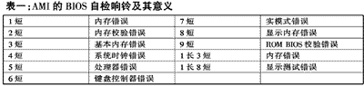
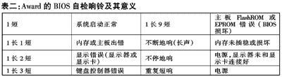
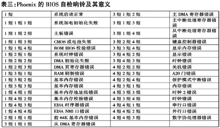

|
| 当前位置：电脑报电子版 > 1999 年 > 38 期 > 硬件周刊 > 你了解BIOS自检响铃吗？ |
| 《 你了解BIOS自检响铃吗？ 》 |
| 计算机启动后就通过BIOS对计算机进行自检。自检情况一般通过PC喇叭发出的响铃予以表达。了解这种响铃，对于诊断计算机硬件故障大有裨益。现在通常所用的BIOS主要有三个品牌：AMI、Award和Phoenix。它们自检响铃所表达的意义有所不同。其具体意义如下三表。   |
| 下载本期推荐软件 | 页 首 |
| 《电脑报》版权所有，电脑报网站编辑部设计制作发布 |